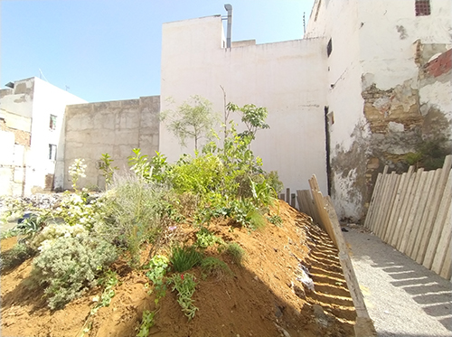
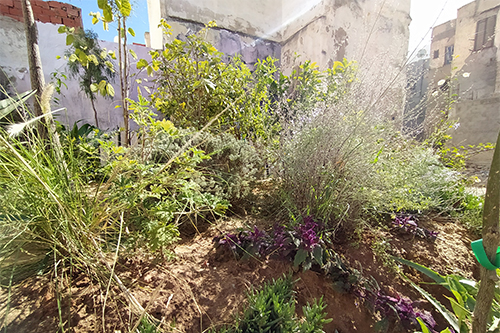

Msabb, المصب aménagement paysagé in situ avec les matériaux et déchets existants sur le site. Installation pérenne de 150m2, Médina de Tunis, Tunisie, 2019-2018. Atef Mataallah avec Aziz Ghariani, Arwa Labidi, Sabrina Issa, Belhassen Chtioui. Assistant de production Ali Kacem.
Msabb, المصب
Pour ce projet mené sur l"année nous avons fait le choix de travailler avec l'existant.
En partant de ce qui est, un amoncellement de détritus, de grands murs et le ciel, nous avons commencé par sculpter l'espace. Et c'est avec cette première matière constituée pour une part de déchets ménagers et de débris de constructions qui ont été déposées sur le site depuis plus de vingt ans que nous avons travaillé à y rendre possible le constitution d'un humus.
Pour qu'un jardin nourricier puisse s'installer durablement sur les différents terre-pleins, un aménagement spécifique à été élaborer afin de favoriser un retour de matière organique et un travail de l'humus dans le temps.
• Etudier le sol, les déchets, leurs nature, leur toxicité,...
• Proposer des solutions pour arriver à un développement de la flore dans une ancienne "décharge"
• Analyser et évaluer les besoins en terme de végétation par rapport au milieu (climat, voisinage, voirie, intervention de la municipalité, ...)
• En concertation avec l'artiste et l'architecte, développer des propositions d'implantation
• Choisir les plantes, arbres et arbustes qui peuvent être adapter à ce milieu
• Procéder à l'Achat, faire les devis
• Etude de l'evolution de la flore dans le milieu, donner des instructions aux habitants de la place et aux autorités concernées.

Msabb, المصب aménagement paysagé in situ avec les matériaux et déchets existants sur le site. Installation pérenne de 150m2, Médina de Tunis, Tunisie, 2019-2018. Atef Mataallah avec Aziz Ghariani, Arwa Labidi, Sabrina Issa, Belhassen Chtioui. Assistant de production Ali Kacem.
Msabb, المصب aménagement paysagé in situ avec les matériaux et déchets existants sur le site. Installation pérenne de 150m2, Médina de Tunis, Tunisie, 2019-2018. Atef Mataallah avec Aziz Ghariani, Arwa Labidi, Sabrina Issa, Belhassen Chtioui. Assistant de production Ali Kacem.
Msabb, المصب aménagement paysagé in situ avec les matériaux et déchets existants sur le site. Installation pérenne de 150m2, Médina de Tunis, Tunisie, 2019-2018. Atef Mataallah avec Aziz Ghariani, Arwa Labidi, Sabrina Issa, Belhassen Chtioui. Assistant de production Ali Kacem.
Sur l'installation l'idée à été de pouvoir rendre visible par endroit, les différentes couches de débris et de déchets présents à l'origine sur le site. Après avoir - sculpté - les déchets, y aménager des niveaux et passages, une couche de terre accueille une cinquantaine d'espèces végétales afin de travailler le sol et le nourrir.
Msabb, المصب aménagement paysagé in situ avec les matériaux et déchets existants sur le site. Installation pérenne de 150m2, Médina de Tunis, Tunisie, 2019-2018. Atef Mataallah avec Aziz Ghariani, Arwa Labidi, Sabrina Issa, Belhassen Chtioui. Assistant de production Ali Kacem.

Msabb, المصب aménagement paysagé in situ avec les matériaux et déchets existants sur le site. Installation pérenne de 150m2, Médina de Tunis, Tunisie, 2019-2018. Atef Mataallah avec Aziz Ghariani, Arwa Labidi, Sabrina Issa, Belhassen Chtioui. Assistant de production Ali Kacem.